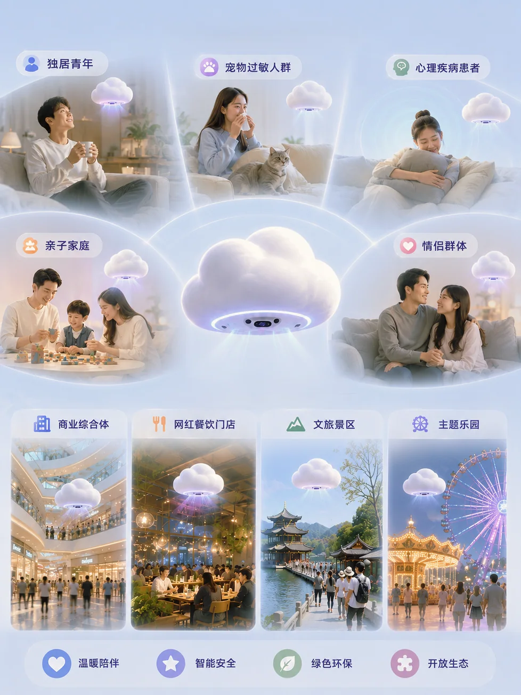

返回运营项目索引
返回运营项目索引一朵云Cloud Fly 陪伴机器人
阅读项目文档 ↓一个人下班回家，打开灯，屋里还是很安静。有时候，你只是想让身边多一点动静，又想保留独处的自在。「一朵云」从这个日常时刻出发，构想了一件能在家中轻轻飘动、偶尔回应你的云朵形陪伴装置。
在我们的设想里，当你坐到沙发上，云朵会低速飘近，避开沿途的障碍，在你身边停下，用柔和的灯光或简短的声音回应。居家办公时，你可以让它安静地待在一旁。手机端则让你查看云朵的状态、调整陪伴模式、记录日常互动，慢慢养成一朵适合自己生活节奏的云。
目前，团队已完成使用场景和交互方案设计。接下来，我们希望通过室内原型测试，看看云朵能否稳定地靠近、停留和避障，也想听听体验者的感受：什么时候希望它靠近，什么时候只想让它安静地待着？


项目文档
汇报逐页阅读
第 1 页
C
L
F
O
L
U
D
Y
一朵云
FLY CLOUD
GOOD
LIFE
- 在这个坚硬的世界上，
给你一朵柔软的陪伴 -
（07/06 --07/12)
HEALING, ENJOYMENT, HAPPINESS
“FLY CLOUD”
第 2 页
市场机遇和产品定位：近万亿陪伴市场，等一朵柔软的云
产品定位：家居陪伴
情感陪伴近万亿市场，竞品要么太贵、要么太硬、要么没实体。“一朵云”用“低空浮游+治愈云朵”的独特形态，精准卡位“软性陪伴”空白带，成为离消费者最近的那朵云。
市场机遇和产品定位--产品展示和落地场景-定价策略-商业模式
HEALING, ENJOYMENT, HAPPINESS
一、市场情感赛道爆发
二、竞品对比分析
三、需求分析和用户画像
较长时间独处、居家办公、独立生活、家庭陪伴等
生活空间相对封闭，社交节奏相对不稳定，缺乏情感交流
不需要高度拟人化机器人，而是自然陪伴物
需要"家里不只是我一个人"的轻量陪伴
第 3 页
产品展示和落地场景：“低空浮游实体+ai虚拟服务”聚焦家居场景
HEALING, ENJOYMENT, HAPPINESS
·低速移动/漂浮
·自动跟随用户居家动线
·靠近、停留、避障
·灯光变化、语音回应
·柔软、蓬松、轻盈
·避免明显机械感与过度 拟人化五官，打造自然陪伴感
·查看云朵实时状态
·调整陪伴模式和个性设置
·ai记录情绪与日常互动
·形成”养一朵云”的长期关系
·不是实体设备的替代品，而是实体陪伴的延伸
•实体+手机端=空间陪伴+情感黏性
实体陪伴：云朵能够在室内低速跟随用户，或根据用户指令靠近、停留、远离。
语音互动：云朵可以进行、天气播报、闹钟提醒、白噪音播放、轻量聊天等。
情绪氛围：通过灯光、颜色、明暗、运动节奏与声音表达状态，例如晴天模式、雨天模式、睡前模式、学习模式、放松模式等。
虚拟养成：手机端可以设置云朵性格、情绪日记、陪伴时长、好感度、云朵状态等功能，使用户与云朵之间形成长期关系，而不仅仅是一次性新奇消费。
市场机遇和产品定位--产品展示和落地场景-定价策略-商业模式
一、产品核心功能
二、应用场景
第 4 页
定价策略：以克制的硬件成本实现功能越级，精准卡位消费级悬浮陪伴市场
竞品价格区间对比
二、精准定价策略
需求&用户画像-市场&竞品分析-产品展示-落地场景-定价策略-商业模式
HEALING, ENJOYMENT, HAPPINESS
综合成本
578元
物料成本
372元
一、成本分析
成本可控条件下，实现感知能力和交互能力的硬件迭代
用极小硬件增量，换取覆盖情感交互、安全守护与氛围营造的全场景能力跃升。
AI会员 ¥19.9/月
内容包 ¥8/月
皮肤装扮 ¥6-30
Cloud Mini ¥400
Cloud Pro ¥650
Cloud Space ¥950
成本控制
App服务定价
第 5 页
商业模式：三期营销方案，讲好“云”故事降低用户门槛
招募100名
“云朵体验官”
从种子用户社群中筛选100名核心用户免费赠送工程机，换取真实使用场景视频和反馈，作为众筹的核心素材。
第3个月：众筹是AI陪伴硬件最有效的首发方式
线下快闪体验
HEALING, ENJOYMENT, HAPPINESS
01
预热期
放大期
转化期
上线前2个月：内容先行，先爱上云，再看到产品
第4个月：让用户“亲眼看到云在飘”，制造第二波高潮
引爆期
内容种草与种子用户积累
国内+海外双平台众筹
持续运营与正式发售
02
03
04
以云朵第一人称视角发布日常内容，不推产品，只讲故事。目标积累1万+粉丝，建立“云朵”IP的情感认知。
小红书“云朵日记”账号运营
制作一系列15秒竖版短视频，展示云跟随、发光、互动的治愈瞬间。不做产品介绍，只做情绪传递。
B站/抖音“云の初体验”15秒治愈短视频
建立私域社群
“云朵守护者联盟”
三平台联动
众筹定价与解锁策略
Kickstarter 70%支持者是第一次使用众筹平台的女性
日本市场对“治愈系”产品接受度极高
国内众筹可积累首批中国用户，为后续电商销售打基础
市场机遇和产品定位--产品展示和落地场景-定价策略-商业模式
第5-6月：正式发售，内容运营持续推进，彻底打开市场
产品三大核心卖点：
“会飘的云”悬浮跟随 + “会说话的云”语音交互 + “会成长的云”AI情绪识别与性格养成
第 6 页
商业模式：财务预测未来三年收入持续向好，总量增长、结构优化
HEALING, ENJOYMENT, HAPPINESS
收入增长&构成多元
收入增长&构成多元
收入增长&构成多元
2026E-2028E业务收入预测
Year3 2028收入构成占比
实现从“硬件产品销售” 向“高附加值服务运营” 的结构性转型
三年成本结构演变
核心竞争优势
研发边际贡献
跟随、避障算法组件化开发，新品研发工作量缩减 70%
毛利攀升
综合毛利率
自 47.1%
提升至 64.5%
盈亏平衡点
运营第19个月
本项目具备极强自我造血能力，
预计 2027 年扭亏为盈，
2028 年净利润达到 1969 万元
营业收入与净利润预测
市场机遇和产品定位--产品展示和落地场景-定价策略-商业模式
第 7 页
T
H
Y
A
O
N
K
U
一朵云
FLY CLOUD
GOOD
LIFE
- 在这个坚硬的世界上，
给你一朵柔软的陪伴 -
（07/06 --07/12)
HEALING, ENJOYMENT, HAPPINESS
“FLY CLOUD”
团队提交的项目说明
不涉及写明原因；长答案可续页，多条记录可复制题目。 第 1 步先把项目和这次视频认清楚
01 项目叫什么现在做到哪一步
怎么填 填项目名、材料日期、当前阶段和两位对接人；阶段可选提案、原型、试点或已运行。
团队补充。 项目正式名称/ 简称：一朵云 Cloud Fly AI 陪伴机器人
本次资料版本/ 日期：Cloud Fly.pptx 2026/07/12
当前阶段及已完成范围：提案。已整理用户定位、产品场景、拟定价格、推广路径和财务预测
02 这支视频在哪里怎样被观看
怎么填 依次填场合、屏幕、声音、时长和交付日期。没有硬性时长上限就写“按内容确定”。
现场能否放音、需要哪种语言：建议中文旁白、中英字幕及轻配乐；现场可放音
硬性时长上限；没有则写“按内容确定”：按内容确定
需要交付的版本及日期：拟交横屏展映版；交付日期按展览安排确定
第 2 步让制作方知道讲给谁讲完留下什么
“视频观众”和“产品使用者”可以不是同一批人，这一页只填视频观众。
03 主要观众是谁他们最想知道什么
怎么填 先只选一种主要观众，再列其他观众。写清已有知识和最关心的两个问题。
助使用者。 主要观众（具体到身份）：首次接触项目的 X-Lab 成果展到场观众
他们已经知道什么：熟悉独处、居家办公等日常情境，对本项目的交互方式未必了解
他们最关心的问题 1：独自在家时，为什么会需要一个轻量的陪伴物？
他们最关心的问题 2：云朵实体怎么陪伴人，手机端又能做什么？
还需兼顾的其他观众：其他训练营团队、导师与展务人员
04 看完后必须记住哪三件事
怎么填 每点写一句具体内容，不写“高效、智能”等空泛词。最后选一个观看后的行动或理解目标。
IntelliDeploy 示例 记住：代码到应用之间存在部署门槛；助手规划接续部署与维护；提案覆盖用户、定价、增长和
迭代。 必须记住 1：观众应理解一朵云面向独处、居家办公等场景，提供低打扰的在场感。
必须记住 2：观众应理解实体拟通过低速移动、灯光和语音与人互动。
必须记住 3：观众应理解手机端拟支持状态查看、个性设置和互动记录，延续陪伴。
若篇幅有限，最不能删的是哪一点、为什么：实体如何陪伴人。这能让观众理解为什么需要一朵实体云。
第 3 步先用平实语言说清项目再列全用户
不必先写漂亮口号。把对象、问题、方法和结果填进句子，制作方再整理表达。
05 怎样用一句话介绍这个项目
怎么填 先填四个短语，再串成一句。效果尚未验证时，用“希望、规划、目标是”。
IntelliDeploy 示例 面向缺少部署资源的团队与个人，规划通过项目或模型输入，辅助配置和维护，让代码成为可访
问的应用。 为谁：为经常独处、希望家里多一点陪伴感的人
解决什么问题：解决想有人陪，又不想被频繁打扰的居家陪伴需求
主要通过什么方式：通过低空浮游云朵、灯光和语音互动，以及手机端养成
最后得到什么：让使用者得到可按日常节奏互动的轻量居家陪伴体验
合成一句话：为经常独处的人设计一朵能在家中移动和回应的云，并用手机端延续陪伴。
06 本片必须讲到哪些产品使用者
必填 | 用户超过三类时继续增加行
怎么填 把需要介绍的用户类别全部列出，每类补一个任务；标出主次，不要只填最熟悉的一类。
IntelliDeploy 示例 B 端：AI 初创与小微企业、高校实验室、传统企业数字化部门。C 端：产品经理、科研人员、自
媒体创作者。 用户类别 1 / 正在完成的任务/ 本片主次：独居者／独自回家后放松、缓解冷清感／主讲
用户类别 2 / 正在完成的任务/ 本片主次：居家办公者／专注工作并在休息时获得陪伴／场景举例
用户类别 3 / 正在完成的任务/ 本片主次：家庭用户／睡前或休息时调节氛围／场景举例
还需介绍的用户（可继续加行）：暂按以上三类；后两类用于说明使用场景
准备先讲哪一类，为什么：先讲独居者。回到安静的家这一情境便于展示核心需求。
第 4 步跟着填一张完整用户逻辑卡
下面两题是一组。先填一类用户；每增加一类必须介绍的用户，就复制整页并换一个 I 编号。
07 这个用户原来怎么做具体卡在哪
必填 | 与 OP08 成组复制；每类重要用户一组
IntelliDeploy 示例 I01 高校实验室：学生运行模型时需配置环境，不同项目容易冲突；导师也难及时看见实验进
度。依据提案 p3。 内容编号/ 标题：I01 / 独居者回家后的轻量陪伴
谁在什么场景下，要完成什么任务：独居者下班回家，在客厅休息，希望有一点在场感。
原来使用什么方法或工具：情境设定：开灯、播放白噪音，或用手机播放音频。
具体在哪一步受阻：想要空间里有轻量回应时，灯光和背景音主要是单向输出。
这个阻碍造成什么后果：可以调节氛围，仍较难获得随人移动或回应的在场感。
依据在哪里；若只是设想请写明：Cloud Fly.pptx 第 2–3 页；为方案情境，待用户验证。
08 项目怎样帮助他最后得到什么
必填 | 与 OP07 成组复制；两题必须使用同一 I 编号
怎么填 沿用上一题 I 编号。写用户动作、项目处理和最终结果；不清楚的技术步骤交软件补。
IntelliDeploy 示例 I01：规划提交项目或模型，经环境检查与隔离部署，获得访问入口，导师可看状态。当前只有
p3、p5 提案依据。 沿用内容编号：I01
用户先做什么/ 提交什么：回家后发出靠近或停留的语音指令，或在手机端选择陪伴模式。
项目接着处理什么（按先后写）：拟识别指令，低速移动并避障，再以灯光或语音回应。
用户最终得到什么具体结果：拟获得可停在身边、低打扰互动的云朵；手机可查看状态和设置偏好。
哪些已验证，哪些只是设计目标：已形成场景和功能方案；实际跟随、避障及交互体验待验证。
第 5 步解释差异也保留做事过程
比较要对准同一个维度；过程只写实际发生的工作，没有访谈或测试就不要补造。
09 与原有做法相比究竟改变了什么
必填；没有直接竞品可比较旧做法 | 每个重要差异复制一题
IntelliDeploy 示例 对照传统部署平台，IntelliDeploy 提案希望用自然语言接续复杂配置步骤。属于团队定位目标，
尚非易用性实测结论。 比较维度（只选一个）：实体陪伴物在室内如何移动
原有做法/ 对照对象怎样处理：以固定摆放的氛围灯为例，主要在原地提供光线和氛围。
本项目准备或已经怎样处理：拟让云朵低速跟随，在用户发出指令时靠近或停留。
这种差异对哪类用户有何价值：独处者在不同房间活动时，仍可获得轻量的在场感。
依据/ 适用条件/ 当前状态：PPT 第 2–3 页；属设计目标，室内跟随与安全边界待验证。
10 团队做过什么又为什么调整
必填实际发生的过程 | 每段希望展示的关键过程复制一题
IntelliDeploy 示例 现有材料包含用户分层、竞品、定价和迭代提案。未提供原始访谈、原型改版或测试记录，相关
团队实际做了什么：完成用户与竞品梳理、实体和手机端功能规划，以及定价与推广提案。
第 6 步把成果和数字的性质写明白
11 哪些成果已经完成哪些还在计划中
怎么填 分别列已完成、已有证据、未完成和下一步。当前仅有提案，也是一种可准确说明的阶段。
IntelliDeploy 示例 已提供产品与商业提案，包含需求、机制和发展路径；运行效果、部署测试和用户反馈证据尚未
提供。 已经完成的具体工作或交付物：已完成 7 页项目提案，含市场定位、功能场景、定价与运营方案。
尚未完成或未验证的部分：低速浮游、跟随避障、语音回应、手机端和用户接受度待验证。
下一步准备验证什么问题：优先验证客厅场景下靠近、停留、避障是否稳定，并收集体验反馈。
12 每个重要数字从哪里来代表什么
本片出现数字时必填；否则写“不涉及” | 每个关键数字复制一题
怎么填 一次填一个数字，补单位、期间、对象或分母及来源。选实测、引用、估算或目标；找不到来源写
只对应成本上限。 数字或含数字的完整表述：不涉及。展映建议聚焦产品体验与原型待验证事项。
单位/ 时间期间/ 对象或分母：不涉及
性质（实测/ 外部引用/ 估算/ 目标）：不涉及
原始来源、页码或数据表、发布日期：不涉及
计算方法或关键假设：不涉及
是否与其他材料冲突；由谁核对：不涉及
第 7 步商业内容涉及才展开不涉及写原因
13 谁付费买到什么价格怎么算
涉及收费或原稿商业章节要求保留时必填 | 有多档价格时复制档位部分或附完整价目表
IntelliDeploy 示例 原稿个人标准版 19 元/月；团队起步版 299 元/年、5 人共享积分。均为定价设想，团队档周期需
核对。 本片是否涉及收费；不涉及的原因：建议展映略过收费，聚焦居家陪伴；下列拟价供内部核对。
谁使用/ 谁购买/ 买到什么：居家陪伴用户拟购云朵硬件，可另选手机端内容与装扮。
本档名称/ 价格/ 币种/ 收费周期：硬件拟价（人民币）：Mini 400 元，Pro 650 元，Space 950 元。
人数或用量/ 核心权益/ 使用限制：AI 会员 19.9 元/月、内容包 8 元/月、皮肤 6–30 元（计费单位待核）。
价格性质（已售/ 拟定）及原表位置：均为拟定
14 用户从哪里来为什么持续使用
涉及增长、留存或长期运营时必填 | 不同用户的路径不同时分别复制
IntelliDeploy 示例 提案中初创企业靠免费体验和口碑，高校靠导师与教学网络，传统企业靠案例和试点；留存依赖
持续维护与资产积累。 本片是否涉及增长或留存；不涉及的原因：可简述触达与持续使用设想，供观众理解项目后续路径。
用户类别/ 从什么渠道接触项目：居家陪伴用户拟从内容平台、众筹页面或线下快闪接触项目。
第一次使用时得到什么价值：线下可设想体验靠近与停留，判断云朵是否适合自己的居家空间。
为什么以后还会回来或继续购买：拟用陪伴模式、个性设置和互动记录，让用户逐步养成自己的云。
传播、推荐或社区激励怎样发生：拟通过种子用户群、内容分享和快闪体验鼓励用户分享。
哪些已经发生，哪些是计划；依据在哪里：均为计划
第 8 步排清下一步也防止重要内容被漏掉
路线写目标，不写成成绩；原稿章节和细项都可以逐行列入，不要求先写视频分镜。
15 下一阶段先做什么如何判断完成
涉及路线或未来计划时必填 | 每个阶段或方向复制一题
怎么填 选一个阶段，填时间、动作、产出和检查方式。没有量化指标可以写可核对的交付物。
IntelliDeploy 示例 原稿第 1 至 3 月规划上线免费至个人专业版，目标付费转化至少 5%、专业版占比至少 3%；不
是已完成指标。 是否需要介绍未来规划；不涉及的原因：需要。简述原型验证与试体验，商业推广用一句话带过。
准备完成的具体动作：在指定客厅动线上验证靠近、停留、低速移动、避障和异常停止。
预期交付物或用户结果：一段连续实拍、测试记录及首轮体验反馈。
怎样判断完成（指标或检查方式）：同一动线重复测试，记录指令成功、避障和异常处理情况。
前提条件/ 尚需资源/ 当前依据：需可运行原型、场地和安全方案
16 原稿哪些内容必须讲哪些可以省略
必填 | 每个重要章节或独立子项复制一题
怎么填 按原稿章节逐项列内容，写清页码和范围。复杂章节拆成子项，不只写“商业模式”等总标题。
IntelliDeploy 示例 p7 需保留六档价格、积分、财务预测和四阶段路线；p9 需保留三方向九个子项，不能只出现三
个方向标题。 内容编号/ 具体要讲什么：I01–05 / 定位、交互场景、拟价、推广、财务预测
原稿文件及页码/ 文档位置：I01 第 2 页；I02 第 3 页；I03 第 4 页；I04 第 5 页；I05 第 6 页。
本版范围（必须讲/ 可压缩/ 不讲）：I01–02 必须讲；I04 可压缩；I03、I05 本版不讲。
为什么这样选择：突出居家需求、跟随与语音、情绪氛围及手机端养成；推广仅作后续设想。
对应文字、图表或素材编号 A：A01 提案：I01 定位、I02 功能、I03 定价、I04 推广、I05 财务。
需要软件核对或补充的内容：跟随、避障、语音、灯光与手机端的真实演示范围。
第 9 步交出项目自己的图像与审美依据
17 哪些图文最能让人认出这个项目
IntelliDeploy 示例 原提案的蓝白配色和机器人可作为识别线索；原图文件和公开使用范围需团队说明，真实产品录
屏待软件提供。 必须保留的名称、标志、颜色或角色：中文称「一朵云」；英文 CLOUD FLY，白色云朵标志
最能代表当前项目的主图/ 文件位置：A02：Cloud Fly.pptx 第 1 页封面，可作为标题和主视觉参考。
素材版本、来源及对应内容 I 编号：A01 为现有 7 页提案，I01–05；A02 为同份提案封面，对应开场。
18 希望是什么观感参考里具体喜欢什么
必填；无参考可写项目特征和明确偏好 | 每个参考复制相关部分，最多先给三例
怎么填 给 1 至 3 个参考，每个写喜欢的具体处理与不想照搬之处；再写它为什么适合项目。
IntelliDeploy 示例 IntelliDeploy 可保留蓝白识别，用“链接经过步骤成为应用”贯穿画面，配轻电子音乐；不让机
器遮人挡机制细节。 希望观众感到什么，为什么适合项目：柔软、安静、有在场感，贴合下班回家和睡前等日常场景。
参考图/ 视频链接或文件：Cloud Fly.pptx 第 1 页及第 3 页；外部参考暂缺。
具体参考它的什么（配色、构图、动作、声音等）：参考封面留白；用日常尺度表现云朵靠近与停留。
不希望照搬的部分：静态文案堆叠和财务图表的路演式排版。
项目适合的视觉动作与声音方向：慢速靠近、柔和灯光渐变，配轻音乐或生活环境音；概念画面加标注。
不应出现的风格或误解：避免机械感、夸张拟人和高频动效；概念画面标注为设计演示。
第 10 步收好结尾再交一个能打开的资料包
最后检查文件能否打开、版本是否一致。运营交清楚内容与材料，不需要先会做动画或编写 JSON。
19 结尾要留下什么哪些词必须读对
IntelliDeploy 示例 结尾可写“IntelliDeploy 智能部署助手提案”；说明后续需原型与真实场景验证，不把预测收入
或划规功能当已实现成绩。 结尾希望留下的一句话：在这个坚硬的世界上，给你一朵柔软的陪伴。
项目名、术语、缩写及读音：FLY CLOUD 读作「弗莱·克劳德」；AI 读英文字母 A、I。
入口与署名由谁确认、何时可提供：暂无
20 资料在哪里交给谁还缺什么
必填 | 素材、缺项较多时复制相关行
怎么填 把说明文档、素材和索引放在一个位置。用 A 编号指文件、I 编号指内容；缺项写责任人与时间。
IntelliDeploy 示例 A01 可指完整 10 页提案，I01 关联 p3 与 p5；真实流程录屏仍待软件补。现有介绍视频只能作为
表达参考，不能证明产品已运行。 资料包文件夹或可访问链接：当前附件 Cloud Fly.pptx
素材 A 编号/ 文件位置/ 对应 I 编号：A01：Cloud Fly.pptx 第 2–6 页／I01–I05。
另一个素材 A 编号/ 文件位置/ 对应 I 编号：A02：同一 PPT 第 1 页封面／开场